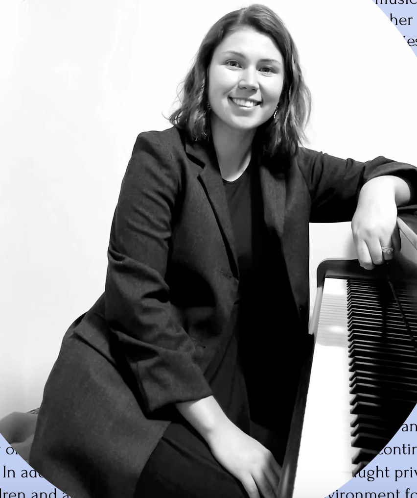
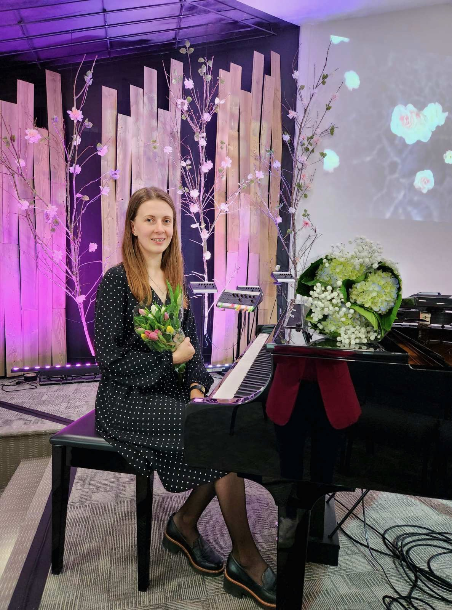
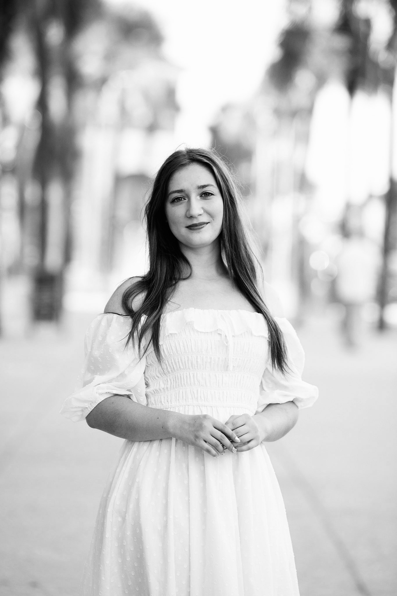
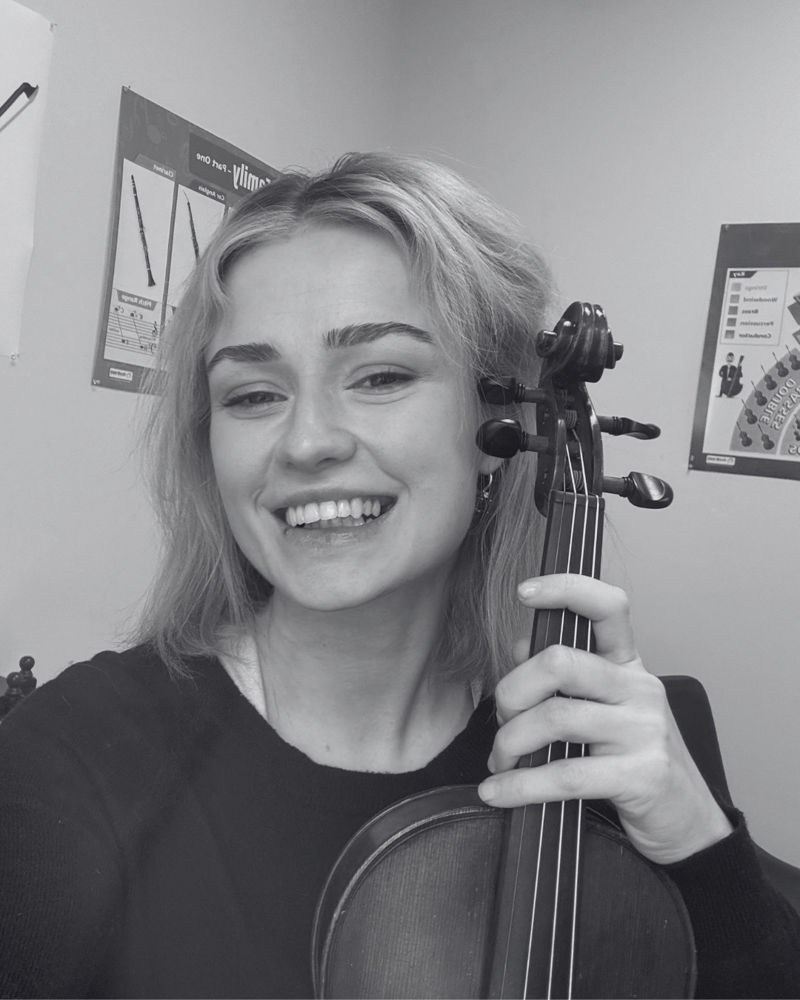
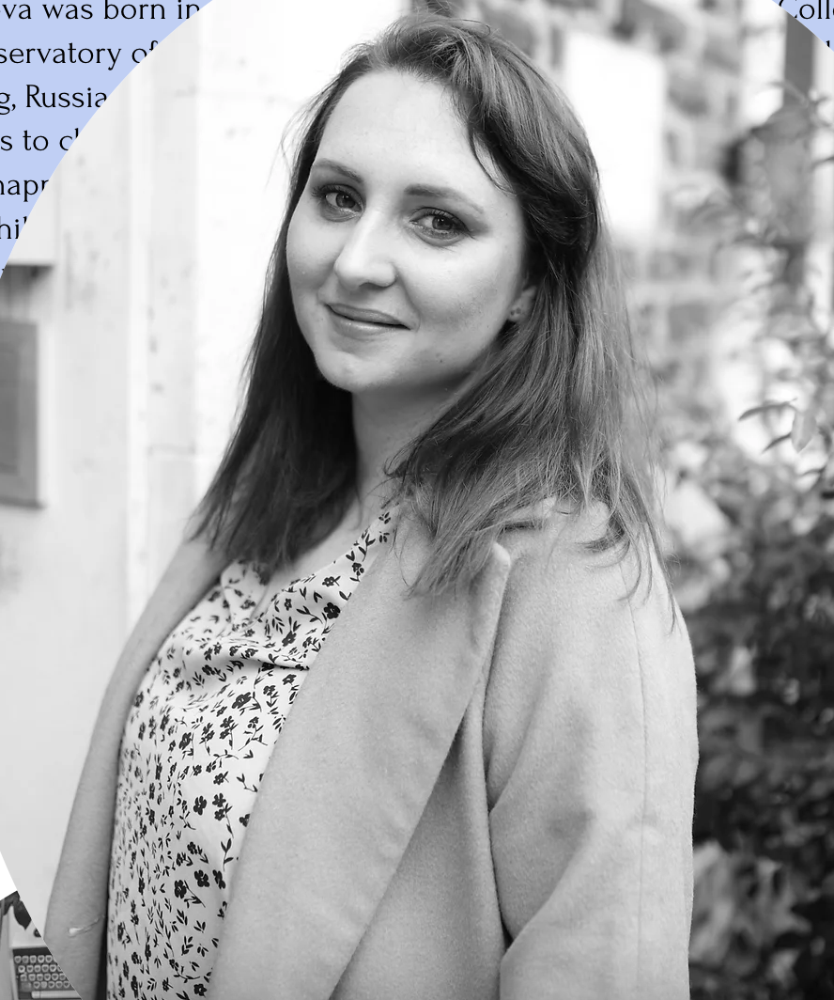

Owner, Piano Instructor, Voice Instructor
Yekaterina was born in Sumgait, Azerbaijan, near the coast of the Caspian Sea. She has been involved in music since the early childhood, singing at home and in church. At the age of 7, her choir director discovered that she had perfect pitch, so she began her piano studies soon after that. As a child, Yekaterina loved to play both classical music and religious hymns. Her family moved to the United States in 2008, so she continued her musical studies in piano and choir here. Yekaterina holds a Bachelor of Arts in Piano degree from the University of North Carolina at Charlotte. While at UNCC, she had a pleasure of performing for world-renowned artists, such as Benedetto Lupo and Rodney Eichenberger. She also holds a Masters in Music with a concentration in Music Theory at the University of North Carolina at Greensboro. Aside from teaching piano, she enjoys singing in the church choir. Yekaterina believes that music develops memory, an ability to focus and brings joy to those who can appreciate it.
Piano Instructor
Born and raised near Frankfurt, Germany, Evelyn Shportylyuk brings a rich musical background and an international perspective to her teaching. With Slavic (Russian) roots, she began studying piano at an early age and later broadened her musical skills through private violin lessons. At just 14 years old, Evelyn earned national recognition by placing second in a Germany-wide piano competition, where she performed the first movement of Beethoven’s Pathétique Sonata. She has a strong passion for classical and Romantic music, with a special love for the works of Chopin. Evelyn has several years of experience teaching private piano, music theory, and song accompaniment to students ages 4–16. She is able to teach lessons in English, German, and Russian. Alongside her teaching, she is an active musician—singing soprano in her church choir and playing violin in the orchestra at Slavic Baptist Church in Matthews. Through her combination of technical expertise, cultural background, and enthusiasm for music, Evelyn encourages her students to grow in both artistry and confidence.

Piano Instructor
Olena Zhunda is a musician from Mariupol, Ukraine. Since she was a child, Olena has had a passion for music. She began learning to play the piano at the age of eight in music school. From 2009 to 2012, she attended a music college, where she majored in piano. In 2017, Olena earned her Bachelor of Arts degree from the State Pedagogical University, and went on to obtain her Master of Music Education degree, specializing in piano. After graduation, Olena continued to share her passion for music by teaching children how to play the piano in a music school and playing in an orchestra. She also taught music and rhythm basics to children at a kindergarten. Olena enjoys playing church music and working with choirs. Recently, in 2022, she moved to Monroe, NC with her family, including her husband and two daughters.

Piano Instructor, Voice Instructor, Flute Instructor
Evelina is originally from Minnesota and previously attended the UNW before moving to the Carolinas. She has been playing the piano for 12 years and the flute for 10 years. Music has always been a big part of her life, whether singing in choirs, accompanying others on the piano, or playing the flute. Evelina sang in choirs for many years and was a vocal performance major for about two years. Although she recently pursued a different career path, she continues to grow as a pianist through private instruction. She remains grateful that music continues to be a meaningful part of her life and cherishes every opportunity to share it with others. Along with performing, she has accompanied ensembles for nearly eight years and has previously experience teaching private piano lessons. Evelina enjoys collaborating with other musicians and helping bring music to life and encouraging students as they develop their own musical abilities. She teaches piano in English and Russian, and encourages each student to let music become their own unique form of expression.

Violin Instructor
Luba is an accomplished violinist and dedicated music educator with over 20 years of performance experience and more than 5 years of teaching experience. Throughout her musical career, she has performed extensively in churches, orchestras, ensembles, and community organizations, cultivating both technical excellence and a deep appreciation for artistic expression and musical collaboration. Beginning violin studies at a young age and later navigating the challenges of relocating to a new country, Luba developed a profound understanding of the emotional and academic transitions many students experience when learning a demanding instrument. She recognizes that the violin is one of the most technically intricate instruments to master and believes students benefit most from individualized, attentive instruction tailored to their unique learning styles, personalities, and developmental needs. Luba’s teaching philosophy combines professionalism, adaptability, and encouragement. Rather than relying solely on rigid, book-based instruction, she incorporates a variety of pedagogical techniques designed to foster confidence, technical precision, musicality, and long-term student engagement. Her approach emphasizes proper posture, ear training, expressive playing, foundational technique, and creating a supportive environment in which students feel both challenged and comfortable. Currently pursuing studies in physical therapy, Luba integrates her understanding of body mechanics, movement, and healthy playing habits into her instruction, helping students develop sustainable and injury-conscious violin technique. This multidisciplinary perspective allows her to guide students with exceptional attention to physical comfort, coordination, and technical efficiency. Having trained under one of the area’s most established music professionals, Luba remains committed to maintaining high instructional standards while cultivating a warm, encouraging atmosphere for students of all ages and levels. Beyond the classroom, she continues to support and promote violin performance through involvement in churches, small organizations, and community-based musical initiatives. .

Piano Instructor, Voice Instructor
Anna Sitnikova was born in Ukraine. She graduated from the Musical College and the Odessa Conservatory of Music. Her teaching career began in Ukraine and continued in St. Petersburg, Russia. In addition to working for a music school, Anna taught private piano lessons to children and adults. Anna aspires to provide an environment for her students to happily concentrate on their musical development. Her main goal is to encourage children to love music and aims to help students grasp music theory as easily and quickly as possible. Anna moved to New York in 2016, and continued teaching piano lessons there. In addition, she taught group music classes to children ages 3 to 5. She always introduces children to the world of music in a lively and fun environment. Anna relocated to Charlotte in early 2022, and is excited to continue her musical career here. She is deeply convinced that music lessons develop memory, attention and encourage an aesthetic perception of the world, and is enthusiastic about progressing into the next stage of her career.